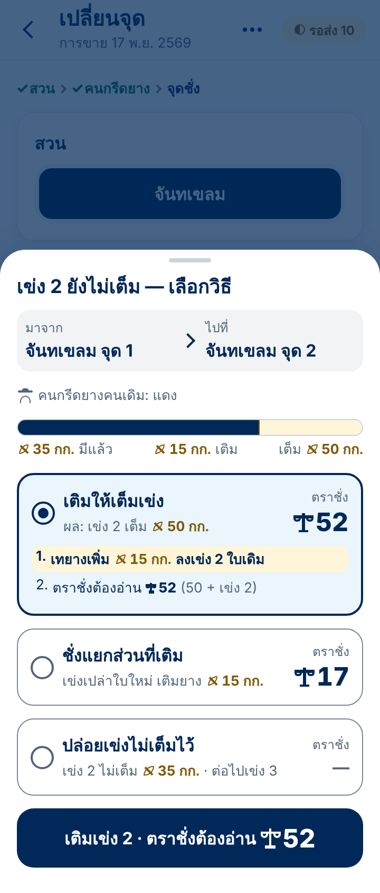
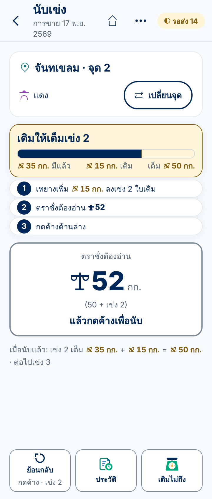

E04-S23 · เปลี่ยนวิธีเติมเข่งก่อนกดค้าง
เจ้าของ 2026-11-17 (dashboard fill-change): "ก · เพิ่มลิงก์ เปลี่ยนวิธีเติม > บนการ์ดคำแนะนำหน้านับ (ก่อนกดค้าง) — ทำ mockup ให้ดูก่อน (แนะนำ)". ตอนนี้เปลี่ยนใจได้แต่ต้องรู้ว่ากด "เปลี่ยนจุด" แล้วเลือกจุดเดิม. ที่เสนอ: 4 จอตามลำดับ ตั้งแต่แผ่น 3 วิธี → หน้านับ → แตะลิงก์ → แผ่นเดิม → หน้านับวิธีใหม่. ซ้าย = หน้าจริงตอนนี้ (dev), ขวา = ที่เสนอ. จอ 360×844.
1 · เปลี่ยนจุดไปจุด 2: แผ่นเลือก 3 วิธี

เข่ง 2 ยังไม่เต็ม — เลือก 1 ใน 3 วิธี
จาก จันทเขลม จุด 1 › ไป จันทเขลม จุด 2 · คนกรีดยาง: แดงหัวแผ่นบอก "เลือก 1 ใน 3 วิธี" และแต่ละวิธีมีเลข 1 2 3
2 · หน้านับ: การ์ดบอกวิธีที่เลือก + "เปลี่ยนวิธีเติม ›"

วิธีที่ 1 · เติมให้เต็มเข่ง 2
กดค้าง · เข่ง 1
หัวการ์ดบอกว่าใช้วิธีไหน (วิธีที่ 1) · แถว "เปลี่ยนวิธีเติม ›" ทั้งแถวแตะได้ ไม่ใช่ปุ่มกลม · มีจนกว่าจะกดค้างครั้งแรก
3 · แตะ "เปลี่ยนวิธีเติม": แผ่นเดิมกลับมา
เข่ง 2 ยังไม่เต็ม — เลือก 1 ใน 3 วิธี
จาก จันทเขลม จุด 1 › ไป จันทเขลม จุด 2 · คนกรีดยาง: แดงวิธีที่ใช้อยู่มี ✓ ใช้อยู่ตอนนี้ · เลือกวิธีอื่นแล้วกดปุ่มล่าง · ยังไม่มีอะไรบันทึกจนกว่าจะกดค้าง
4 · กลับหน้านับด้วยวิธีใหม่
วิธีที่ 2 · ชั่งแยกส่วนที่เติม
กดค้าง · เข่ง 1
การ์ดเปลี่ยนเป็นวิธีที่ 2 ตาชั่งต้องอ่าน 17 · ยังเปลี่ยนได้อีกจนกว่าจะกดค้าง
หลังกดค้างครั้งแรก
ลิงก์หายไป (การเติมถูกบันทึกแล้ว). ถ้าเปลี่ยนใจ: กดค้าง "ย้อนกลับ" ยกเลิกส่วนที่เติม แล้วการ์ดและลิงก์กลับมา (ทำได้แล้วตอนนี้ ไม่เปลี่ยน).
คำถามถึงเจ้าของ
Q1 ลิงก์ "เปลี่ยนวิธีเติม ›" ท้ายการ์ด (แนะนำ) โอเคไหม? · Q2 หัวแผ่น "เลือก 1 ใน 3 วิธี" และเลข 1 2 3 หน้าวิธี ช่วยให้เห็นว่ามี 3 ทางไหม? · Q3 หัวการ์ดหน้านับบอก "วิธีที่ 1 · …" (แนะนำ) หรือคงหัวเดิม "เติมให้เต็มเข่ง 2"?